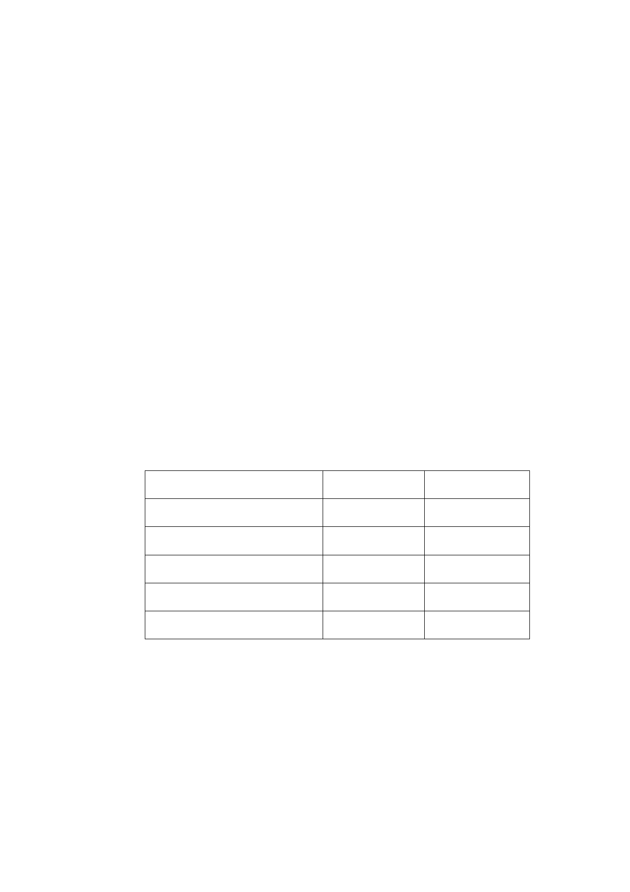

2.工業區變更回饋：
（1）交通部臺灣鐵路管理局以及瑠公農田水利會管有之土地，依
內政部訂頒「都市計畫工業區檢討變更審議規範」規定，捐
贈土地比例為土地面積之 40.5%。
（2）計畫區北側臺鐵局與高鐵局共同持分之土地仍納入計畫範
圍，惟因實際地下作高鐵隧道使用，高鐵持分部分毋須回
饋，但未來不計入建蔽率及容積率檢討。
（二）擬定細部計畫：
1.土地使用計畫
本案細部計畫包括特定專用區（一）、特定專用區（二）、特定
專用區（三）、特定專用區（四），以及公園用地（供博物館使
用）、道路用地以及綠地用地。
2.土地使用及分區管制
（1）土地使用強度
A.建蔽率及容積率規定
使用分區及用地
建蔽率（％） 容積率（％）
特定專用區（一）
55 319
特定專用區（二）
55 560
特定專用區（三）
50 315
特定專用區（四）
40 45.52
公園用地（供博物館使用）
65
120
B.本計畫範圍內於市民大道側由原第三種工業區變更為特
定專用區（一）、（二）、（四）、公園用地（供博物館使用）
之高鐵持分土地因未依規定回饋且作為隧道使用，可納入
建築基地，但不得計入建蔽率、容積率檢討。
C.本計畫區不得申請綜合設計放寬獎勵及各相關法令規定
之獎勵容積，且不得作為容積移轉之接受基地。
-7-